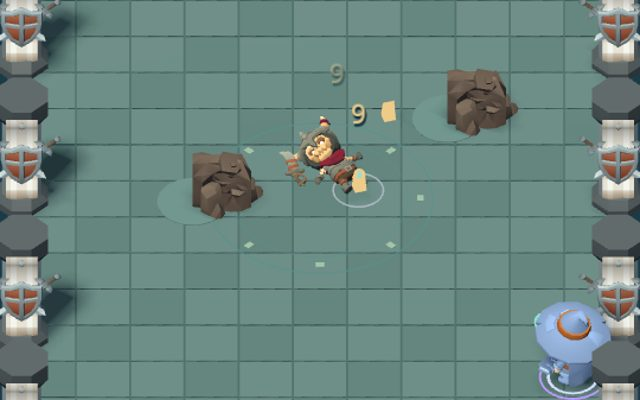

Accès anticipé · fin novembre 2026
Échos
Dungeon crawler vu de dessus : choisis ta classe, esquive les attaques, choisis tes pouvoirs, affronte les boss. Bientôt sur Google Play, l'App Store et Steam.
 FODIÉ GAMES
FODIÉ GAMES
Studio indépendant. Un seul jeu, fait avec exigence : Échos, sur Android, iPhone et PC.
Découvrir Échos →
Dungeon crawler vu de dessus : choisis ta classe, esquive les attaques, choisis tes pouvoirs, affronte les boss. Bientôt sur Google Play, l'App Store et Steam.
Fodié Games est un studio indépendant fondé par Fodié Marega à Paris. Échos est conçu pour être agréable tout de suite : pas de pop-ups qui coupent le jeu, pas d'écrans de connexion obligatoires, pas de mécaniques qui tirent de l'argent du joueur. Juste un bon jeu.
Les modèles 3D viennent de KayKit (CC0, Kay Lousberg), la musique et les sons sont originaux et générés par programme. Le code est en Godot 4.